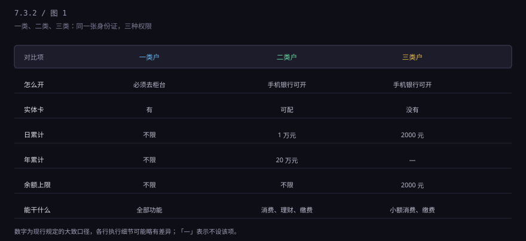
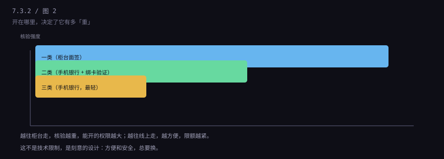
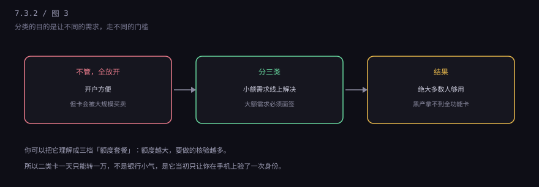

约 0.1 万字 · 3 张图 · 同样是银行卡，权限可以差十倍
2015 年之前，银行开户很随意。一个人在同一家银行能开十几张卡， 有些网点还背着发卡任务，办卡送油送米。结果是： 大量实名卡被开出来，转手卖给诈骗团伙。
2016 年，央行发了一个文件（业内叫 261 号文），把个人银行账户分成三类。 核心思路是：你做了多少身份核验，就给你多大权限。
这就是为什么你在手机上开的户只有 1 万额度—— 因为你只做了"绑一张已有的卡 + 人脸识别"，没去柜台面签。
三类户的区别，用一张表看完最清楚。

一类户：必须本人带身份证到柜台，面签。全功能，没有限额， 可以存取现金、转账、买理财、代发工资。一个人在同一家银行只能有一个一类户。
二类户：可以在手机银行开，靠"绑一张本人已有的银行卡 + 人脸识别"来验证身份。 有实体卡（可选），日累计 1 万，年累计 20 万。能消费、能缴费、能买理财，但不能存取现金。
三类户：最轻，也是线上开。没有实体卡，余额上限 2000 元， 日累计 2000 元。只能做小额消费和缴费，像个"电子零钱包"。
把三类户按"核验强度"排一下，规律很明显。

一类户要面签，是因为柜台能做的事最多：读芯片、比人脸、看本人、 留影像资料。核验最严，所以权限最大。
二类户靠"绑一张本人一类卡"来间接验证——你既然有一类户， 说明你已经面签过了，所以给你一个中等额度。
三类户最轻，只验证手机号和身份证号，所以只给 2000 块的活动空间。
如果只有一类户，那所有人都得跑柜台，线上开户就没法做； 如果全都放开，黑产就能批量开卡。

分类的本质是把"方便"和"额度"拆开： 你想方便，手机点几下就能开，但只能小额； 你要大额，跑一趟柜台，给你全功能。
这个设计还有个副作用，很多人不知道：二类户可以升级成一类户。 你带着身份证去柜台，把手机开的二类户做一次面签，就能升成一类。 反过来，一类户也可以降级。
三个实际建议。
第一，主账户留一个一类户就够。 工资、房贷、大额转账都走它。多开一类户也没用，同一家银行只能有一个。
第二，二类户适合当"隔离账户"。 比如专门用来网购、绑定各种 App，里面只放少量钱。 就算被盗刷，损失也有限，主账户不受影响。
第三，别把二类户当主卡用。 日累计 1 万的限制，交房租、交学费、买车都会卡住。 遇到这种情况，去柜台升成一类，或者直接用一类户转。
下一节讲开户流程里最容易被抱怨、也最容易被误解的一环： KYC 和反洗钱。银行为什么追着问你"钱从哪来"、"转给谁"。